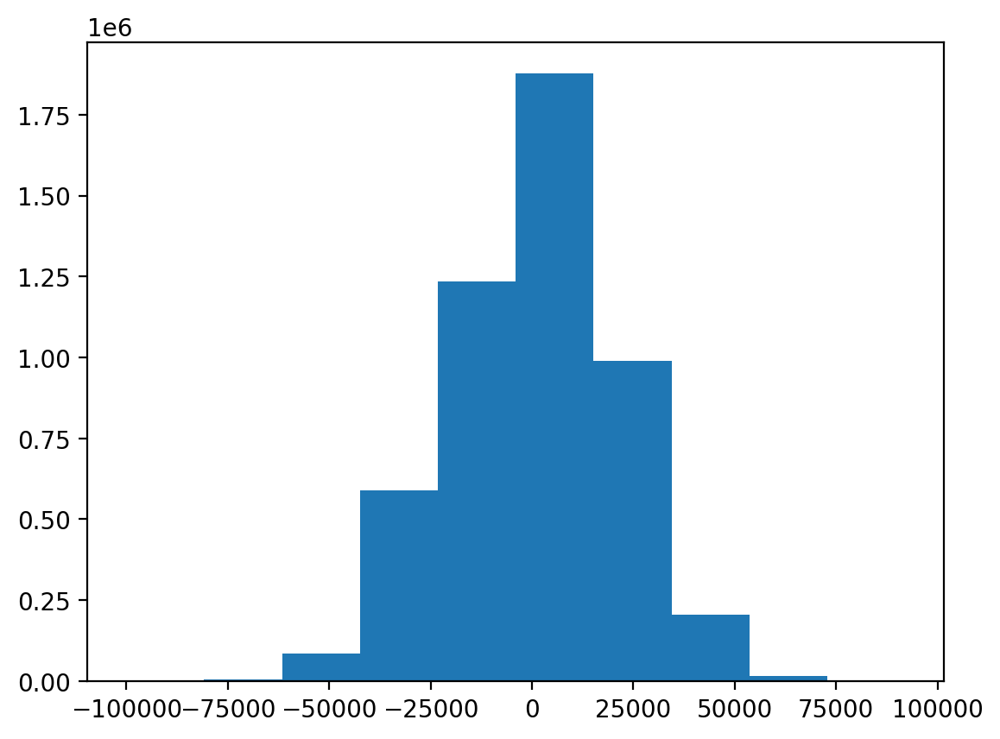
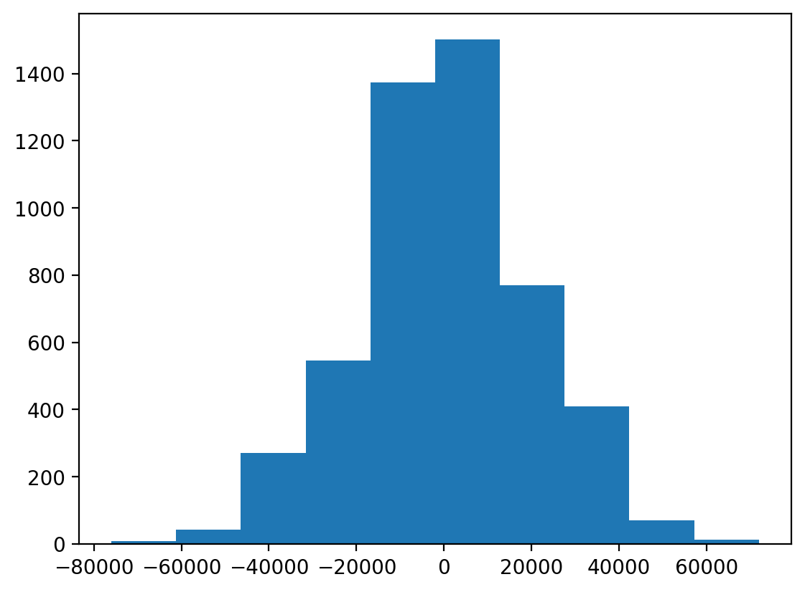
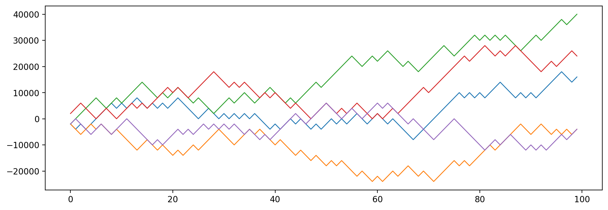
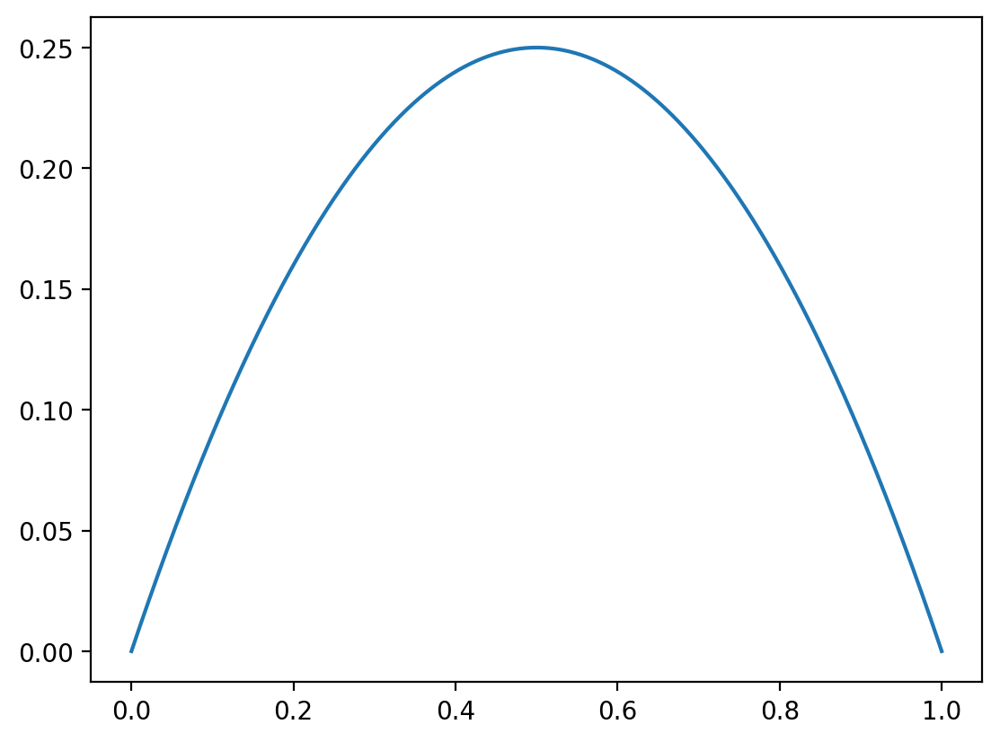
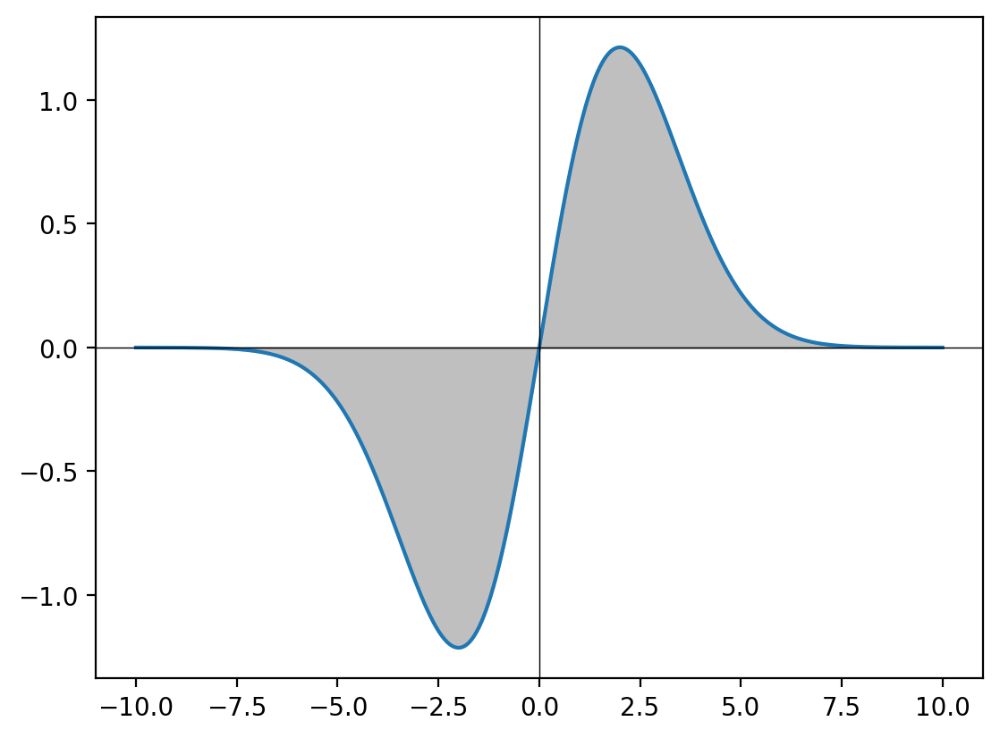

import numpy as np
import torch
import torch.distributions as dist
import pandas as pd
import matplotlib.pyplot as plt
%matplotlib inline
%config InlineBackend.figure_format = 'retina'Mathematical Expectation and Law of Large Numbers
Probability
Statistics
Mathematics
Random Variables
A comprehensive exploration of mathematical expectation, running averages, and the Law of Large Numbers with practical examples including dice rolls, coin flips, and financial simulations
Keywords
expectation, law of large numbers, running average, monte carlo simulation, dice simulation, bernoulli distribution, variance
—author: Nipun Batratitle: Mathematical Expectation and Law of Large Numbersdescription: A comprehensive exploration of mathematical expectation, running averages, and the Law of Large Numbers with practical examples including dice rolls, coin flips, and financial simulationscategories: - Probability - Statistics - Mathematics - Random Variableskeywords: - expectation - law of large numbers - running average - monte carlo simulation - dice simulation - bernoulli distribution - variancedate: ’2025-01-13’badges: truetoc: true—# Mathematical Expectation and Law of Large Numbers## Learning ObjectivesBy the end of this notebook, you will understand:1. Mathematical Expectation: The concept of expected value as the long-run average of a random variable2. Law of Large Numbers: How sample averages converge to the theoretical expectation as sample size increases3. Running Averages: How to compute and visualize convergence in real-time simulations4. Practical Applications: Real-world examples including financial modeling and game theory5. Variance and Risk: Understanding the relationship between expected value and variability## IntroductionMathematical expectation is one of the most fundamental concepts in probability theory and statistics. It represents the “center” or average value we expect from a random variable over many trials. While a single observation from a random variable can vary widely, the Law of Large Numbers guarantees that the average of many observations will converge to the theoretical expectation.This notebook explores these concepts through interactive simulations and practical examples, including:- Dice rolling simulations demonstrating convergence to expected value- Financial modeling with coin flip games- Monte Carlo methods for numerical estimation- Real-world applications in risk assessment and decision makingLet’s start by setting up our computational environment and then dive into the fascinating world of mathematical expectation!
Setting Up the EnvironmentWe’ll use PyTorch for probability distributions, NumPy for numerical computations, Pandas for data manipulation, and Matplotlib for visualizations.
Dice Rolling Simulation: Understanding Expected ValueLet’s start with a classic example - rolling a fair six-sided die. The theoretical expected value of a fair die is:\[E[X] = \frac{1 + 2 + 3 + 4 + 5 + 6}{6} = \frac{21}{6} = 3.5\]Even though we can never actually roll a 3.5, this is the average value we expect over many rolls.
dice = dist.Categorical(probs=torch.tensor([1/6]*6))
# Sample N dice rolls
N = 1000
rolls = dice.sample((N,)) + 1
# 1 is added to the sample because the sample is 0-indexedObserving Individual Dice RollsLet’s examine the frequency distribution of our dice rolls to see how they compare to the theoretical uniform distribution:
Computing Running AveragesNow let’s compute the running average to see how it converges to the theoretical expectation of 3.5:
The red dashed line shows the theoretical expected value of 3.5. Notice how the running average oscillates around this value and gradually converges to it as the number of rolls increases. This is a visual demonstration of the Law of Large Numbers.
rolls[:10]tensor([2, 3, 2, 2, 5, 5, 5, 5, 2, 2])Bernoulli Distribution and Expected ValueLet’s explore the Bernoulli distribution, which models binary outcomes (success/failure, heads/tails, etc.). For a Bernoulli random variable with probability \(p\) of success:\[E[X] = 1 \cdot p + 0 \cdot (1-p) = p\]So for a fair coin (\(p = 0.5\)), the expected value is 0.5.
fig, ax = plt.subplots(figsize=(12, 4))
ax.plot(rolls, lw=0.5, marker='o', markersize=1)
ax.set_xlabel('Roll number')Text(0.5, 0, 'Roll number')
pd.Series(rolls).value_counts().sort_index()1 183
2 160
3 188
4 148
5 165
6 156
Name: count, dtype: int64Financial Application: Coin Flip GameNow let’s explore a more complex application - a financial game based on coin flips. This demonstrates how expectation and variance work together in risk assessment.
Game SetupIn this game:- Each player plays 100 coin flips- Win ₹2000 for each heads- Lose ₹2000 for each tails- We simulate millions of players to understand the distribution of outcomes
# Running average
runing_avg = torch.cumsum(rolls, dim=0) / torch.arange(1, N+1)plt.plot(runing_avg, lw=1)
plt.xlabel('Roll number')
plt.ylabel('Running average')
plt.axhline(3.5, color='red', lw=1, ls='--')
def compute_running_avg(N):
rolls = dice.sample((N,)) + 1
runing_avg = torch.cumsum(rolls, dim=0) / torch.arange(1, N+1)
return runing_avgdist = torch.distributions.Bernoulli(probs=0.5)
samples = dist.sample((100,))samples.mean()tensor(0.5100)pd.Series(samples.numpy()).value_counts()1.0 51
0.0 49
Name: count, dtype: int64# Game of winning and losing money based on a coin flipwin_amt = 2000
loss_amt = -2000
total_count_N = 100 # Number of coin flips
dist = torch.distributions.Binomial(total_count_N, probs=0.5)num_samples = 5000000 # number of players/Number of times we perform total_count_N coin flipsDistribution of WinningsLet’s visualize the distribution of net money won across all players:
Expected Value and Variance AnalysisLet’s analyze the statistical properties of our game:
num_times_wins_across_samples = dist.sample((num_samples,))The ratio close to 1 confirms that our simulation matches the theoretical variance formula for the sum of independent random variables.
Alternative Simulation Approach: Individual Coin FlipsLet’s implement the same game using individual Bernoulli trials instead of the Binomial distribution to verify our results:
num_times_wins_across_samples[:100]tensor([46., 54., 58., 58., 58., 55., 55., 47., 50., 54., 54., 40., 52., 54.,
54., 44., 49., 53., 59., 43., 54., 47., 53., 46., 45., 55., 50., 48.,
51., 56., 49., 42., 50., 52., 48., 53., 58., 47., 46., 46., 58., 60.,
40., 44., 53., 47., 50., 52., 42., 50., 45., 52., 52., 51., 46., 33.,
53., 52., 49., 42., 52., 44., 56., 49., 51., 55., 50., 53., 57., 50.,
49., 53., 56., 53., 49., 48., 55., 50., 50., 48., 59., 53., 54., 37.,
48., 57., 41., 60., 55., 59., 53., 55., 50., 46., 51., 47., 51., 44.,
43., 55.])if num_samples<=50:
fig, ax = plt.subplots(figsize=(12, 4))
pd.Series(num_times_wins_across_samples.numpy()).plot(kind='bar', rot=0, ax=ax)
plt.xlabel('Sample number')
plt.ylabel('Number of wins')net_money_won = num_times_wins_across_samples * win_amt + (total_count_N - num_times_wins_across_samples) * loss_amt
net_money_won_series = pd.Series(net_money_won.numpy())net_money_won_series0 -16000.0
1 16000.0
2 32000.0
3 32000.0
4 32000.0
...
4999995 -16000.0
4999996 52000.0
4999997 -44000.0
4999998 -4000.0
4999999 -20000.0
Length: 5000000, dtype: float32net_money_won_series.var()399787200.0net_money_won_series.max() - net_money_won_series.min()192000.0if num_samples<=50:
fig, ax = plt.subplots(figsize=(12, 4))
net_money_won_series.plot(kind='bar', rot=0, ax=ax)
ax.axhline(0, color='red', lw=1, ls='--')net_money_won_series.hist(grid=False)
net_money_won_series.mean()-6.3688net_money_won_series.var()399787200.0net_money_won_series.var()/((win_amt**2) * total_count_N)0.999468Visualizing Individual Player TrajectoriesLet’s examine how individual players’ fortunes evolve over the course of their 100 coin flips:
# same analysis but starting from Bernoulli distributionThis powerful visualization shows all player trajectories in gray (left) and the final distribution of outcomes (right). Notice how most trajectories cluster around zero net winnings, consistent with the fair game’s expected value of zero.
Mathematical Properties: Variance and Its MaximumLet’s explore an important mathematical property - when does the variance of a Bernoulli distribution reach its maximum?
Verifying Expected Value of Binomial DistributionLet’s verify that our simulation correctly captures the expected value of a Binomial distribution:
win_amt = 2000
loss_amt = -2000
total_count_N = 100 # Number of coin flips# Simulate game
dist = torch.distributions.Bernoulli(probs=0.5)Advanced Example: Expectation of Gaussian DistributionLet’s conclude with a more advanced example - computing the expected value of a Gaussian distribution using integration. For a standard normal distribution \(X \sim \mathcal{N}(0, \sigma^2)\):\[E[X] = \int_{-\infty}^{\infty} x \cdot \frac{1}{\sqrt{2\pi\sigma^2}} e^{-\frac{x^2}{2\sigma^2}} dx = 0\]This integral evaluates to zero because the function is odd and symmetric around zero.
SummaryIn this notebook, we’ve explored the fundamental concept of mathematical expectation through:1. Theoretical Foundation: Understanding expected value as the long-run average2. Law of Large Numbers: Observing convergence through simulation3. Practical Applications: Financial modeling and risk assessment4. Statistical Properties: Variance and its relationship to expectation5. Advanced Concepts: Integration for continuous distributions### Key Takeaways- Expected value provides the central tendency of a random variable- The Law of Large Numbers guarantees convergence of sample means- Variance measures the spread around the expected value- Even fair games (zero expected value) can have high variance and risk- Simulation is a powerful tool for understanding theoretical concepts### Next Steps- Explore conditional expectation and its applications- Study the Central Limit Theorem and its relationship to the Law of Large Numbers- Investigate more complex probability distributions and their moments- Apply these concepts to real-world data analysis problems
overall_samples = dist.sample(torch.Size([num_samples, total_count_N]))overall_samples.shapetorch.Size([5000, 100])overall_samples_df = pd.DataFrame(overall_samples.numpy())overall_samples_df.head()| 0 | 1 | 2 | 3 | 4 | 5 | 6 | 7 | 8 | 9 | ... | 90 | 91 | 92 | 93 | 94 | 95 | 96 | 97 | 98 | 99 | |
|---|---|---|---|---|---|---|---|---|---|---|---|---|---|---|---|---|---|---|---|---|---|
| 0 | 0.0 | 0.0 | 1.0 | 0.0 | 1.0 | 1.0 | 1.0 | 1.0 | 1.0 | 0.0 | ... | 1.0 | 0.0 | 1.0 | 1.0 | 1.0 | 1.0 | 1.0 | 0.0 | 0.0 | 1.0 |
| 1 | 0.0 | 0.0 | 0.0 | 1.0 | 1.0 | 0.0 | 1.0 | 0.0 | 0.0 | 1.0 | ... | 0.0 | 1.0 | 1.0 | 0.0 | 0.0 | 1.0 | 0.0 | 1.0 | 0.0 | 1.0 |
| 2 | 0.0 | 1.0 | 1.0 | 1.0 | 1.0 | 1.0 | 0.0 | 0.0 | 1.0 | 1.0 | ... | 1.0 | 1.0 | 0.0 | 1.0 | 1.0 | 1.0 | 1.0 | 0.0 | 1.0 | 1.0 |
| 3 | 1.0 | 1.0 | 1.0 | 0.0 | 0.0 | 0.0 | 1.0 | 1.0 | 0.0 | 0.0 | ... | 0.0 | 0.0 | 0.0 | 1.0 | 1.0 | 0.0 | 1.0 | 1.0 | 1.0 | 0.0 |
| 4 | 0.0 | 1.0 | 0.0 | 0.0 | 0.0 | 1.0 | 1.0 | 0.0 | 0.0 | 1.0 | ... | 1.0 | 0.0 | 1.0 | 0.0 | 1.0 | 1.0 | 1.0 | 0.0 | 1.0 | 1.0 |
5 rows × 100 columns
# win and loss -- replace 0 with -2000 and 1 with 2000
win_amount_df = overall_samples_df.replace({0: loss_amt, 1: win_amt})
win_amount_df.head()| 0 | 1 | 2 | 3 | 4 | 5 | 6 | 7 | 8 | 9 | ... | 90 | 91 | 92 | 93 | 94 | 95 | 96 | 97 | 98 | 99 | |
|---|---|---|---|---|---|---|---|---|---|---|---|---|---|---|---|---|---|---|---|---|---|
| 0 | -2000.0 | -2000.0 | 2000.0 | -2000.0 | 2000.0 | 2000.0 | 2000.0 | 2000.0 | 2000.0 | -2000.0 | ... | 2000.0 | -2000.0 | 2000.0 | 2000.0 | 2000.0 | 2000.0 | 2000.0 | -2000.0 | -2000.0 | 2000.0 |
| 1 | -2000.0 | -2000.0 | -2000.0 | 2000.0 | 2000.0 | -2000.0 | 2000.0 | -2000.0 | -2000.0 | 2000.0 | ... | -2000.0 | 2000.0 | 2000.0 | -2000.0 | -2000.0 | 2000.0 | -2000.0 | 2000.0 | -2000.0 | 2000.0 |
| 2 | -2000.0 | 2000.0 | 2000.0 | 2000.0 | 2000.0 | 2000.0 | -2000.0 | -2000.0 | 2000.0 | 2000.0 | ... | 2000.0 | 2000.0 | -2000.0 | 2000.0 | 2000.0 | 2000.0 | 2000.0 | -2000.0 | 2000.0 | 2000.0 |
| 3 | 2000.0 | 2000.0 | 2000.0 | -2000.0 | -2000.0 | -2000.0 | 2000.0 | 2000.0 | -2000.0 | -2000.0 | ... | -2000.0 | -2000.0 | -2000.0 | 2000.0 | 2000.0 | -2000.0 | 2000.0 | 2000.0 | 2000.0 | -2000.0 |
| 4 | -2000.0 | 2000.0 | -2000.0 | -2000.0 | -2000.0 | 2000.0 | 2000.0 | -2000.0 | -2000.0 | 2000.0 | ... | 2000.0 | -2000.0 | 2000.0 | -2000.0 | 2000.0 | 2000.0 | 2000.0 | -2000.0 | 2000.0 | 2000.0 |
5 rows × 100 columns
# Net money won
net_money_won = win_amount_df.sum(axis=1)
net_money_won0 16000.0
1 -4000.0
2 40000.0
3 24000.0
4 -4000.0
...
4995 0.0
4996 -12000.0
4997 16000.0
4998 12000.0
4999 40000.0
Length: 5000, dtype: float32net_money_won.hist(grid=False)
net_money_won.var()397101630.0net_money_won.mean()561.6# Plotting cumulative sum of net money won for first 5 players
fig, ax = plt.subplots(figsize=(12, 4))
for i in range(5):
#win_amount_df.iloc[i].values.cumsum()
ax.plot(win_amount_df.iloc[i].values.cumsum(), lw=1)
cumsum_df = win_amount_df.cumsum(axis=1)
cumsum_df.head()| 0 | 1 | 2 | 3 | 4 | 5 | 6 | 7 | 8 | 9 | ... | 90 | 91 | 92 | 93 | 94 | 95 | 96 | 97 | 98 | 99 | |
|---|---|---|---|---|---|---|---|---|---|---|---|---|---|---|---|---|---|---|---|---|---|
| 0 | -2000.0 | -4000.0 | -2000.0 | -4000.0 | -2000.0 | 0.0 | 2000.0 | 4000.0 | 6000.0 | 4000.0 | ... | 10000.0 | 8000.0 | 10000.0 | 12000.0 | 14000.0 | 16000.0 | 18000.0 | 16000.0 | 14000.0 | 16000.0 |
| 1 | -2000.0 | -4000.0 | -6000.0 | -4000.0 | -2000.0 | -4000.0 | -2000.0 | -4000.0 | -6000.0 | -4000.0 | ... | -6000.0 | -4000.0 | -2000.0 | -4000.0 | -6000.0 | -4000.0 | -6000.0 | -4000.0 | -6000.0 | -4000.0 |
| 2 | -2000.0 | 0.0 | 2000.0 | 4000.0 | 6000.0 | 8000.0 | 6000.0 | 4000.0 | 6000.0 | 8000.0 | ... | 30000.0 | 32000.0 | 30000.0 | 32000.0 | 34000.0 | 36000.0 | 38000.0 | 36000.0 | 38000.0 | 40000.0 |
| 3 | 2000.0 | 4000.0 | 6000.0 | 4000.0 | 2000.0 | 0.0 | 2000.0 | 4000.0 | 2000.0 | 0.0 | ... | 22000.0 | 20000.0 | 18000.0 | 20000.0 | 22000.0 | 20000.0 | 22000.0 | 24000.0 | 26000.0 | 24000.0 |
| 4 | -2000.0 | 0.0 | -2000.0 | -4000.0 | -6000.0 | -4000.0 | -2000.0 | -4000.0 | -6000.0 | -4000.0 | ... | -10000.0 | -12000.0 | -10000.0 | -12000.0 | -10000.0 | -8000.0 | -6000.0 | -8000.0 | -6000.0 | -4000.0 |
5 rows × 100 columns
fig = plt.figure(figsize=(14, 6))
gs = fig.add_gridspec(1, 2, width_ratios=[4, 1]) # 4:1 ratio for main plot and histogram
# Main plot (left plot for cumulative sum)
ax1 = fig.add_subplot(gs[0])
cumsum_df = win_amount_df.cumsum(axis=1)
cumsum_df.T.plot(legend=False, lw=1, alpha=0.1, color='k', ax=ax1)
ax1.set_xlabel("Number of coin flips")
ax1.set_ylabel("Net money won")
# Right plot (histogram)
ax2 = fig.add_subplot(gs[1])
ax2.hist(net_money_won, color='gray', alpha=0.5, orientation='horizontal', bins=30)
ax2.set_xlabel("Frequency")
# Adjust layout
plt.tight_layout()
plt.savefig('coin_flip_game.png', dpi=600)
p = np.linspace(0, 1, 1000)
plt.plot(p, p*(1-p), label='p(1-p)')
p = 0.5
dist = torch.distributions.Binomial(total_count=2, probs=p)N = 100000000
samples = dist.sample((N,))samples.mean().item()0.9999343752861023### Finding the mean of Gaussian distrubution
y_lin = torch.linspace(-10, 10, 1000)
sigma = 2.0
out = y_lin*torch.exp(-y_lin**2/(2*sigma**2))
plt.plot(y_lin, out)
# Drawing coordinate axis at x = 0, y = 0
plt.axhline(0, color='black', lw=0.5)
plt.axvline(0, color='black', lw=0.5)
plt.fill_between(y_lin, out, color='gray', alpha=0.5)